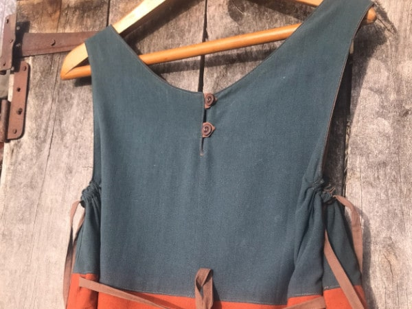
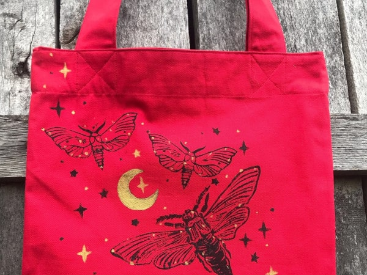

Проекты
- Домокомплекты "Солмадом"
- ЛПХ "Домик в Лесу"
- Мастерская "Лампы из леса"
- Сказкотерапия Марии Яката
- Домашняя сыроварня "Cheese Me"
- Гидролаты Лунной Элли
- Обучение английскому языку
- Швейная мастерская "Forest Patch"
- Массаж для женщин
- Керамическая мастерская "Тепло"
- Варганы и ловцы снов
- Проект "Крот Новосвободный"
Добро пожаловать в мою швейную мастерскую Forest Patch!
Здесь рождается уникальная одежда, с душой и вдохновением.
Каждая вещь — это произведение искусства, которое вы больше нигде не найдете

В одежде я люблю комфорт и стиль. Ценю оригинальность и экологичность материалов.
Поэтому мои изделия идеально подходят для тех, кто ценит качество, оригинальность и экологичность материалов.
В своей швейной мастерской я делаю

- Лоскутные юбки, платья и сарафаны
- Бохо одежда из лоскутков
- Линогравюрная печать на ткани
- Оригинальные сумки-шопперы с авторскими рисунками.
- Кастомайзинг одежды